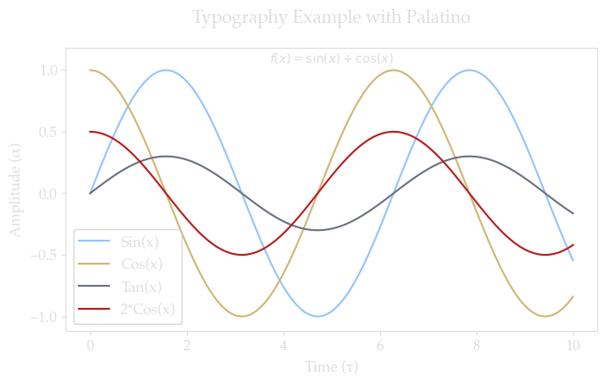
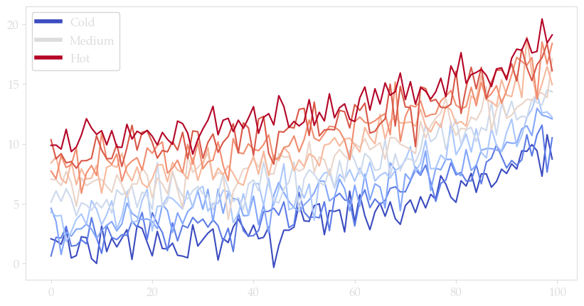

Content with notebooks#
You can also create content with Jupyter Notebooks. This means that you can include code blocks and their outputs in your book.
Markdown + notebooks#
As it is markdown, you can embed images, HTML, etc into your posts!

You can also \(add_{math}\) and
or
But make sure you $Escape $your $dollar signs $you want to keep!
MyST markdown#
MyST markdown works in Jupyter Notebooks as well. For more information about MyST markdown, check out the MyST guide in Jupyter Book, or see the MyST markdown documentation.
Code blocks and outputs#
Jupyter Book will also embed your code blocks and output in your book. For example, here’s some sample Matplotlib code:
Show code cell source
from matplotlib import rcParams, cycler
import matplotlib.pyplot as plt
import numpy as np
import matplotlib.pyplot as plt
import matplotlib as mpl
from matplotlib.font_manager import findfont, FontProperties
# Define our font stack to match your CSS
font_stack = ['et-book', 'Palatino', 'Palatino Linotype', 'Palatino LT STD',
'Book Antiqua', 'Georgia', 'DejaVu Serif']
def get_available_font():
for font in font_stack:
try:
if findfont(FontProperties(family=font)) is not None:
return font
except:
continue
return 'DejaVu Serif'
selected_font = get_available_font()
# Create a custom style dictionary with transparent elements
dark_theme = {
# Figure and background - making fully transparent
'figure.facecolor': 'none', # This ensures transparency
'axes.facecolor': 'none', # Matching your CSS exactly
# Save with transparent background
'savefig.transparent': True,
# Font settings to match your CSS
'font.family': 'serif',
'font.serif': [selected_font],
'font.size': 12,
'font.weight': 250, # Matching your CSS font-weight
# Grid settings
'grid.color': '#FFFFFF',
'grid.alpha': 0.3,
# Text colors to match your CSS
'text.color': '#ddd', # Matching your CSS text color
'axes.labelcolor': '#ddd',
'xtick.color': '#ddd',
'ytick.color': '#ddd',
# Edge colors
'axes.edgecolor': '#ddd',
# Line colors - choosing colors that work with your theme
'axes.prop_cycle': mpl.cycler(color=[
'#93C5FD',
'#D1B675',
'#6B7280',
'#B91C1C',
'#C3FF5B', # Lime
'#FF88FF', # Pink
'#FFD700', # Gold
'#8BE9FD' # Another blue variant
])
}
# Apply the custom style
plt.style.use('dark_background')
plt.rcParams.update(dark_theme)
# # Fixing random state for reproducibility
# np.random.seed(19680801)
# N = 10
# data = [np.logspace(0, 1, 100) + np.random.randn(100) + ii for ii in range(N)]
# data = np.array(data).T
# cmap = plt.cm.coolwarm
# rcParams['axes.prop_cycle'] = cycler(color=cmap(np.linspace(0, 1, N)))
# from matplotlib.lines import Line2D
# custom_lines = [Line2D([0], [0], color=cmap(0.), lw=4),
# Line2D([0], [0], color=cmap(.5), lw=4),
# Line2D([0], [0], color=cmap(1.), lw=4)]
# fig, ax = plt.subplots(figsize=(10, 5))
# lines = ax.plot(data)
# ax.legend(custom_lines, ['Cold', 'Medium', 'Hot']);
There is a lot more that you can do with outputs (such as including interactive outputs) with your book. For more information about this, see the Jupyter Book documentation
Notebooks with MyST Markdown#
Jupyter Book also lets you write text-based notebooks using MyST Markdown. See the Notebooks with MyST Markdown documentation for more detailed instructions. This page shows off a notebook written in MyST Markdown.
An example cell#
With MyST Markdown, you can define code cells with a directive like so:
Show code cell source
# For any plots you create, add these settings:
def create_plot():
fig, ax = plt.subplots(figsize=(7, 4.5))
# Generate some sample data
x = np.linspace(0, 10, 100)
ax.plot(x, np.sin(x), label='Sin(x)')
ax.plot(x, np.cos(x), label='Cos(x)')
ax.plot(x, 0.3 * np.sin(x), label='Tan(x)')
ax.plot(x, 0.5 * np.cos(x), label='2*Cos(x)')
# Demonstrate various text elements
ax.set_title('Typography Example with ' + selected_font, pad=20)
ax.set_xlabel('Time (τ)') # Using Greek letter
ax.set_ylabel('Amplitude (α)') # Using Greek letter
# Add some mathematical notation
ax.text(0.5, 0.95, r'$f(x) = \sin(x) + \cos(x)$',
transform=ax.transAxes,
fontsize=10,
horizontalalignment='center')
ax.grid(True, alpha=0.2)
ax.set_ylim(-1.12, 1.18)
ax.legend(framealpha=0.8)
plt.tight_layout()
plt.show()
create_plot()

Show code cell source
# Fixing random state for reproducibility
np.random.seed(19680801)
N = 10
data = [np.logspace(0, 1, 100) + np.random.randn(100) + ii for ii in range(N)]
data = np.array(data).T
cmap = plt.cm.coolwarm
rcParams['axes.prop_cycle'] = cycler(color=cmap(np.linspace(0, 1, N)))
from matplotlib.lines import Line2D
custom_lines = [Line2D([0], [0], color=cmap(0.), lw=4),
Line2D([0], [0], color=cmap(.5), lw=4),
Line2D([0], [0], color=cmap(1.), lw=4)]
fig, ax = plt.subplots(figsize=(10, 5))
lines = ax.plot(data)
ax.legend(custom_lines, ['Cold', 'Medium', 'Hot']);

When your book is built, the contents of any {code-cell} blocks will be
executed with your default Jupyter kernel, and their outputs will be displayed
in-line with the rest of your content.
See also
Jupyter Book uses Jupytext to convert text-based files to notebooks, and can support many other text-based notebook files.
Create a notebook with MyST Markdown#
MyST Markdown notebooks are defined by two things:
YAML metadata that is needed to understand if / how it should convert text files to notebooks (including information about the kernel needed). See the YAML at the top of this page for example.
The presence of
{code-cell}directives, which will be executed with your book.
That’s all that is needed to get started!
Quickly add YAML metadata for MyST Notebooks#
Testing
Dropdown TESTING
If you have a markdown file and you’d like to quickly add YAML metadata to it, so that Jupyter Book will treat it as a MyST Markdown Notebook, run the following command:
jupyter-book myst init path/to/markdownfile.md